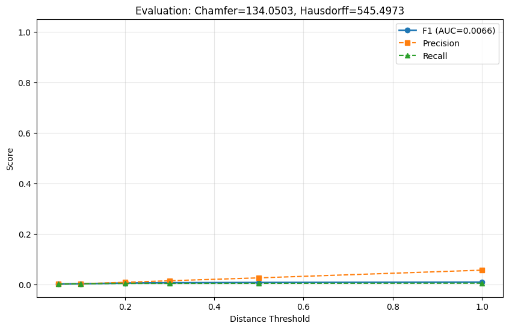
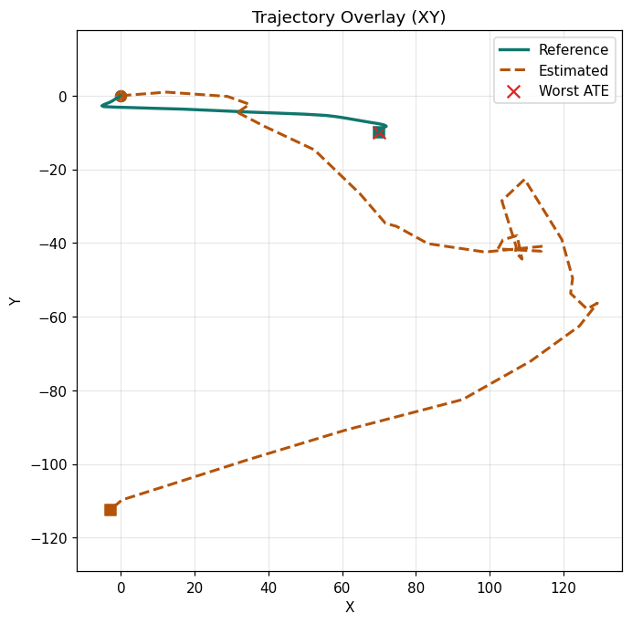
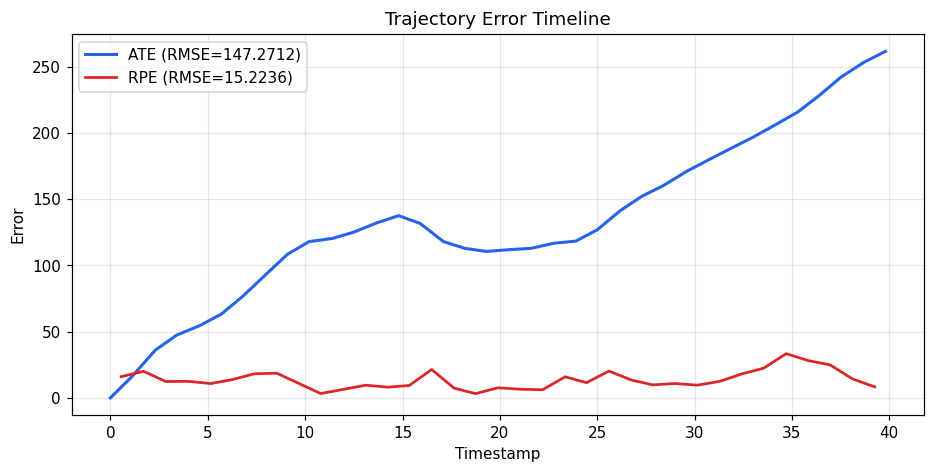

| Map | old_~2026/CloudAnalyzer/docs/leaderboard/runs/small-gicp__kitti-mini/map.ply vs old_~2026/CloudAnalyzer/benchmarks/slam/kitti-mini/data/sequence_00/map.pcd |
|---|---|
| Trajectory | old_~2026/CloudAnalyzer/docs/leaderboard/runs/small-gicp__kitti-mini/trajectory.tum vs old_~2026/CloudAnalyzer/benchmarks/slam/kitti-mini/data/sequence_00/trajectory.tum |
| Map AUC | 0.0066 |
| Trajectory ATE RMSE | 147.2712 |
| Trajectory Drift | 261.7620 |
| Overall Quality Gate | FAIL |
| Source points | 2902258 |
|---|---|
| Reference points | 3013071 |
| Chamfer Distance | 134.0503 |
| Hausdorff Distance | 545.4973 |
| AUC (F1) | 0.0066 |
| Best F1 | 0.0085 @ d=1.00 |
| Map Quality Gate | FAIL |
| Min AUC | 0.8500 |
| Max Chamfer | 0.5000 |
| Estimated poses | 400 |
|---|---|
| Reference poses | 400 |
| Matched poses | 36 (9.0%) |
| Alignment | none |
| ATE RMSE | 147.2712 |
| RPE RMSE | 15.2236 |
| Endpoint Drift | 261.7620 |
| Trajectory Quality Gate | FAIL |
| Max ATE RMSE | 5.0000 |
| Max RPE RMSE | 1.0000 |
| Max Drift | 5.0000 |
| Min Coverage | 80.0% |



ca web 'old_~2026/CloudAnalyzer/docs/leaderboard/runs/small-gicp__kitti-mini/map.ply' 'old_~2026/CloudAnalyzer/benchmarks/slam/kitti-mini/data/sequence_00/map.pcd' --heatmap --trajectory 'old_~2026/CloudAnalyzer/docs/leaderboard/runs/small-gicp__kitti-mini/trajectory.tum' --trajectory-reference 'old_~2026/CloudAnalyzer/benchmarks/slam/kitti-mini/data/sequence_00/trajectory.tum'ca web 'old_~2026/CloudAnalyzer/docs/leaderboard/runs/small-gicp__kitti-mini/map.ply' 'old_~2026/CloudAnalyzer/benchmarks/slam/kitti-mini/data/sequence_00/map.pcd' --heatmapca heatmap3d 'old_~2026/CloudAnalyzer/docs/leaderboard/runs/small-gicp__kitti-mini/map.ply' 'old_~2026/CloudAnalyzer/benchmarks/slam/kitti-mini/data/sequence_00/map.pcd' -o map_vs_map_heatmap.pngca traj-evaluate 'old_~2026/CloudAnalyzer/docs/leaderboard/runs/small-gicp__kitti-mini/trajectory.tum' 'old_~2026/CloudAnalyzer/benchmarks/slam/kitti-mini/data/sequence_00/trajectory.tum' --report trajectory_vs_trajectory_trajectory_report.htmlca traj-evaluate 'old_~2026/CloudAnalyzer/docs/leaderboard/runs/small-gicp__kitti-mini/trajectory.tum' 'old_~2026/CloudAnalyzer/benchmarks/slam/kitti-mini/data/sequence_00/trajectory.tum' --align-origin --report trajectory_vs_trajectory_trajectory_aligned_report.htmlca traj-evaluate 'old_~2026/CloudAnalyzer/docs/leaderboard/runs/small-gicp__kitti-mini/trajectory.tum' 'old_~2026/CloudAnalyzer/benchmarks/slam/kitti-mini/data/sequence_00/trajectory.tum' --align-rigid --report trajectory_vs_trajectory_trajectory_rigid_report.html